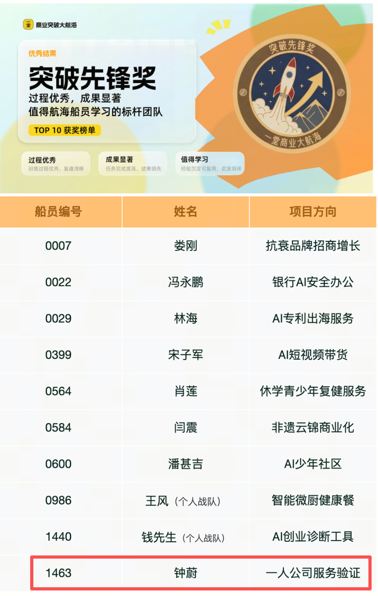
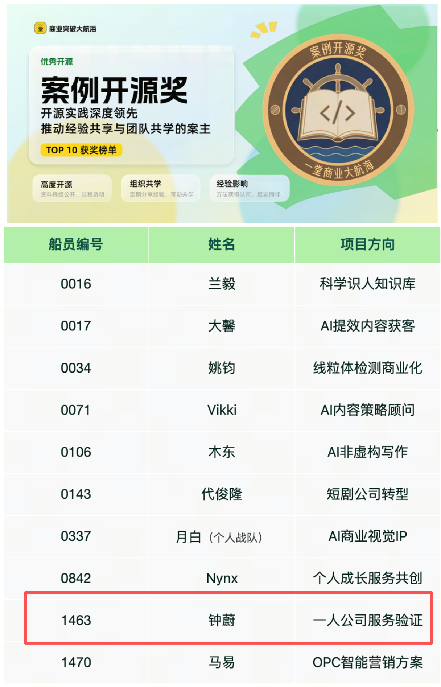
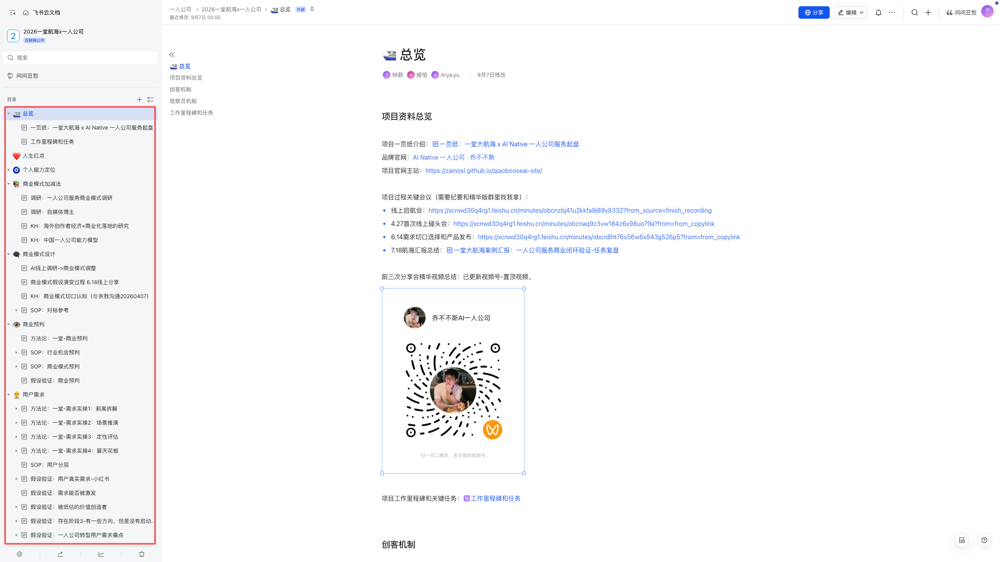
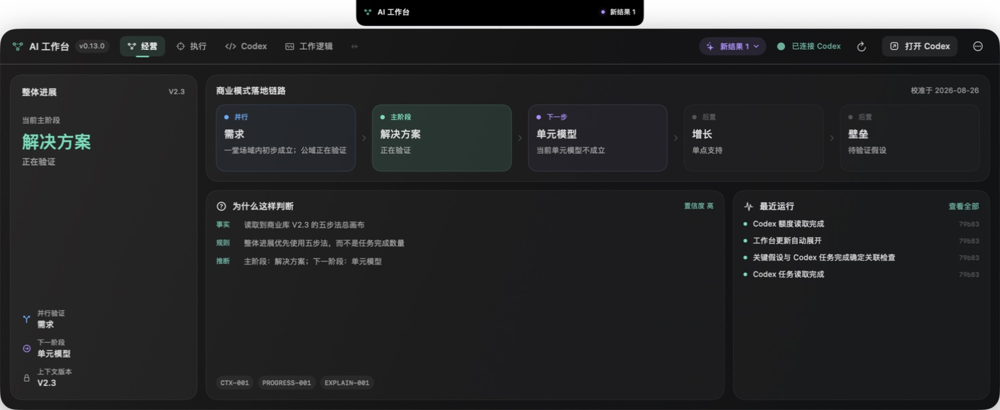
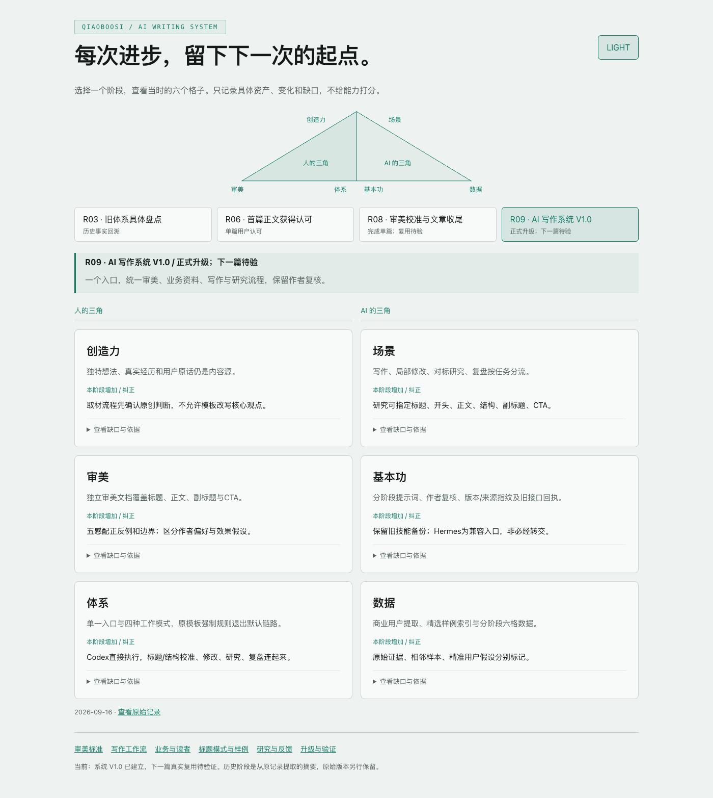

起点 / 产品与商业经验
一线大厂
AI 产品负责人
8 年 AI 产品经验，曾任 AI 大厂产品一号位，负责完整产品线与千万级业务。
我希望帮助本来能创造更大价值的职场人，在不盲目裸辞的前提下，构建自己的 AI 一人公司商业模式，持续拓展认知，走向更自由的人生。
8 年 AI 产品经验，曾任 AI 大厂产品一号位，负责完整产品线与千万级业务。
利用工作日晚上和周末，把产品、商业与 AI 经验用于一人公司，在真实市场里检验。
从模糊想法走到种子用户、付款与交付。我把经历、成果和踩坑持续开源分享。
航海前，我写过几篇阅读过万的文章，也有一百多位因“一人公司”话题加我的联系人。但到底服务谁、卖什么、怎样交付，我都没想清楚。
泛泛地想服务“做一人公司的职场人”，谁都像用户。
明确目标用户与需求从泛泛的设想，走到具体服务对象。
0 个正式产品，只有“帮人找方向、启动”的设想。
2 个付费产品完成设计并正式发布。
0 位付款用户，不知道大家只是感兴趣，还是真的愿意购买。
7 位付款用户 · 3,193 元获得共创付款，并进入真实交付。
0 个真实交付案例，设计的流程还没有经过用户检验。
完成真实服务与反馈根据用户的实际变化，持续改进服务。
文章有阅读、微信有人加，但还没有购买路径。
首位一堂之外的客户从内容获客走到真实购买。
研究、内容和业务动作零散地推进。
让 AI 进入实际业务参与研究、内容、运营与交付。
一百多位因“一人公司”话题加来的联系人。
100+ 人的一人公司运营群围绕共同主题，持续分享与交流。
上一轮一堂商业突破大航海，项目“一人公司服务验证”获突破先锋奖与案例开源奖。榜单中的船员编号是 1463，姓名是钟蔚。


用户、产品、付款、交付和获客开始接起来了。稳定创造用户价值、持续付费和可持续经营，是我接下来要继续走的路。
我把预判、调研、用户分析、产品设计、关键会议和验证过程持续开源。你可以看到当时怎么想、怎么做、哪里错了、后来怎么改，借这些积累加快自己的起步。
这一轮，我想把走过的经验和踩坑开源分享，借助一堂的方法与 AI 实践，和你从选方向开始，一起走向找到需求、做出产品、获得真实成交收入，再完成交付与反馈。用三个月，结合你自己的一人公司业务，完成 0～1 商业闭环。
从还没决定要不要做，到真正跑通并放大业务，我们面对的问题很不一样。
对一人公司有兴趣，但还没想好要不要做、能做什么。
已经决定启动，但还没完成自己的第一个商业闭环。
已经完成商业闭环，希望扩大客户、收入与交付规模。
继续建设组织、渠道和系统，支撑更大规模的经营。
阶段 1 和阶段 2，是这次我主要想邀请的伙伴。在接触和服务用户的过程中，我看到这两个阶段的很多人，会卡在下面这些问题上。
不大也不小，能由自己组织起来、持续经营。
让一个人能承担的工作更多，也做得更好。
先明确当前阶段要到哪里、做什么算取得进展。业务推进与 AI 工作能力，是两条同级的任务线。
把想法一步步推向真实客户与收入。
把经常要做的工作，变成可复用的能力。
找方向、做预判时可以用 AI 调研；表达产品、接触用户时可以用 AI 写作。
把当前任务还没覆盖的痛点提出来，大家一起讨论。当大家确认有共同痛点、达成共识后，再纳入航海任务与排期。
两条线贯穿航海，按专题任务组推进。每个组里，大家集中推进一个任务；不同组可以并行。你可以从当前卡点加入，也可以按基本里程碑走一遍，完善基座。
先看我是怎样做的，再用双三角讲清方法、标准与 AI 执行方式。你带入自己的材料和判断，亲自完成这项任务。
结合自己的人生红点、能力与资源，用加法打开可能性，用减法比较取舍。先形成自己认可、愿意投入的方向，再去市场里验证。
过程中可用的支持：YAI、我开源的 Skills、一堂的方法论，以及我已经走过的案例和实践经验。结合当期动作使用，逐步形成你自己的 AI 工作方式。
结合一堂实际日程，把相关节点用到当期任务；已有业务积累可以直接复用。这是我发起的共创邀请，具体参与安排另行沟通。
每个任务约 1～2 周。完成自己的业务成果，分享反馈、校准判断，再带着积累进入下一个任务。专题分组与具体排期，上船后会详细说明。
以找方向为例：形成自己的候选方向、取舍依据和下一步验证行动。
以找方向为例：留下自己的背景资料、判断标准，以及可复用的提示词、Skill 或工作流。
这次我会带上自己的实践过程、业务方法、AI 工作流和工作台，结合当期任务做示范、共创与交流。你可以从这些积累出发，做出适合自己的版本。
怎么选方向、做预判、找需求、选用户、做产品。原始材料、判断依据与踩坑，都拿出来分享。
把一堂方法落到任务里的做法、案例和底稿，让你能照着理解，带入自己的业务实践。
带上自己正在用的 AI 写作系统、调研方法和工作台，作为你的起步参考与复用基础。
知识库、经营工作台与 AI 写作系统的真实页面。点击图片，查看大图。



想做的业务可以不同，但我们有共同的目标：把自己的一人公司做起来。相近阶段、共同任务，让讨论聚焦到彼此眼前真正要解决的问题。
聊 AI，就看它怎么帮助完成当前任务；聊商业，就看方向、用户、产品与变现；分享经历，就带上真实做法、卡点和反馈。每次交流，都回到自己的一人公司下一步。
我聚焦一人公司 0～1，把走过的经验与积累开源；结合一堂这次航海的 AI 实践主题与节奏，你带入自己的业务，亲自完成一个个任务。
分享实际案例、业务方法、AI 工具与踩坑经验，围绕当期任务做示范与讨论。
提供 AI 实践主题、方法与航海节奏，从提示词、Skill 到工作台，把学到的做出来。
带入自己的经历、业务与材料，亲自判断、实践、获取市场反馈，拿到属于自己的结果。
经验、方法与同行伙伴，最终都要落到同一件事上：让你的一人公司从想法走向产品、变现与交付。
这三个月，我们以从选方向走到真实成交与交付为目标。一项项任务，最终要连到你自己的业务结果上。
知道为什么选择，也愿意亲自投入和尝试。
知道为谁解决什么问题，有实际材料和反馈作为依据。
能向潜在客户介绍方案，给出报价，并履行承诺的价值。
让真实用户为产品付款，获得成交收入，再完成交付与反馈。
本次主要面向还没启动的 −1～0，以及尚未完成商业闭环的 0～1 阶段。如果你想把自己的一人公司做起来，可以带着当前的想法、已有尝试和卡点参与。
不用担心，我们会细分专题任务组，不同组的任务可以并行推进。你可以加入当前最需要的任务组。如果对前面的任务还不笃定，也建议先按基本里程碑走一遍，完善自己的基座。
可以。你可以等自己想解决的专题任务开始时加入；有时间，也可以参与其他任务，补充和完善已经做过的工作。
不涉及，全部开源。未来社群模式也永远不会收费。
我们会结合一堂实际节点安排，把学习用于自己的真实任务。你可以根据学习进度和当前卡点选择专题组；具体时间与准备要求会提前说明。
完成方向、需求、产品、真实成交与交付，是这次共同推进的目标。实际结果取决于业务条件、亲自投入和市场反馈，不能预先保证。过程中，我们会根据真实证据继续、调整或停止某个方向。
上船后会发布更详细的机制与节奏，包括专题分组、任务排期、准备要求和交流安排。
还有问题，加我微信聊 ↗
帮助本来能创造更大价值的职场人，在不盲目裸辞的前提下，构建自己的 AI 一人公司商业模式。让能力创造价值，让认知持续进化，也让人生拥有更多自由。